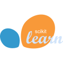

API Coach Ejecutivo para Chilexpress S.A.
Reducir el tiempo de investigación de mercados y clientes para el equipo comercial.
Meta de forecast alcanzada en hasta un 35 % menos tiempo que el año anterior
Ingeniero en Computación · 4° año
Data & AI Engineer
Diseño pipelines de datos y oriento modelos de IA y LLMs a problemas reales, en la nube (AWS y Azure). Mi foco está en arquitecturas escalables, con mirada técnica y de negocio.
Reducir el tiempo de investigación de mercados y clientes para el equipo comercial.
Meta de forecast alcanzada en hasta un 35 % menos tiempo que el año anterior
Reducir el tiempo administrativo de las educadoras al registrar observaciones de los niños.
Carga administrativa semanal reducida de 4 horas a 0
Mercados de predicción para eventos de la comunidad Beauchef, como la Copa de la Mona, con fichas ficticias.
Plataforma funcional de mercados de predicción con precios automáticos, racha diaria y ranking de la comunidad
Comparar, lado a lado, cómo responden al mismo mensaje dos modelos de IA del mismo nivel, servidos desde dos nubes.
Dos modelos de IA respondiendo en paralelo al mismo mensaje, comparables lado a lado y con todo el historial guardado
Segmentar clientes con datos de campaña de marketing para entender sus perfiles de compra.
6 perfiles de clientes identificados y ≈ 92 % de acierto al anticipar quién comprará más vino
Simulaciones con datos de ejemplo. Pruébalas aquí mismo.
Demo simulada · datos de ejemplo
Las demos necesitan JavaScript activado.
Herramientas que uso en mis proyectos de datos e IA.

scikit-learn¿Pasar de horas a minutos en un análisis operativo? No es magia: es ingeniería de datos e IA bien aplicada.
Soy César, estudiante de 4° año de Ingeniería Civil en Computación en la Universidad de Chile, con minor en Data Science. Me especializo en desarrollo backend y automatización con IA: diseño arquitecturas escalables y pipelines que resuelven problemas de negocio reales.
Hoy busco mi segunda práctica profesional en automatización con IA o desarrollo de software, idealmente en minería, banca o empresas internacionales.
Experiencia profesional y académica, de la más reciente a la más antigua.
01/2026 – 02/2026
Chilexpress
Diseñé e implementé APIs REST con FastAPI en AWS, integrando IA generativa para automatizar procesos críticos. Reduje el tiempo de investigación de mercados de 2–4 horas a 10 minutos (reducción de 92 % a 96 %).
Ver demo del API Coach Ejecutivo08/2025 – 12/2025
Universidad de Chile
Lideré mentorías técnicas en arquitectura de software y calidad de código, con pruebas de QA.
07/2024 – 12/2024
Universidad de Chile
Construí pipelines end-to-end con Python y SQL, y modelos de K-Means y KNN para segmentar datos. Alcancé ≈ 92 % de precisión predictiva (validación cruzada).
Ver demo de segmentaciónEn Chilexpress llevé la investigación de mercados de 2–4 horas a 10 minutos con IA generativa, y con Avista eliminamos las 4 horas semanales de registro de las educadoras. Escríbeme y vemos qué podemos automatizar.